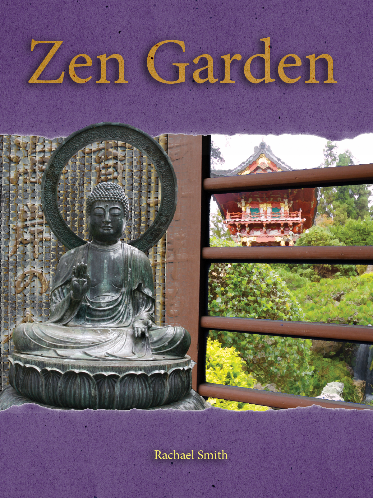

Masks and Channels Photoshop Tutorial
In order to create this image and make it look something like a book cover, I first began by creating a quick mask and using the Brush tool to select just the image of the Buddha without including the background of the image it was originally part of. I then made my selection into a layer mask so that it would be permanent.
To get the image of the window so that the area between the slats was gone I looked at the color channels for the layer and copied the Cyan channel in order to adjust the Levels so that the channel/mask became purely black and white. I then loaded the edited mask with the image of the garden selected, and added a mask to the garden layer. In order to give the garden as seen through the window a glassy look, I selected the Glass filter from the Filter Gallery and applied it to the layer.
To achieve the faded mosaic look of the writing behind the Buddha, I added a layer mask to the writing layer and then used the Gradient tool to made it fade away near the edge of the window. I then chose the Mosaic Tile filter from the Filter Gallery.
For the purple paper on the top and bottom of the image I edited an image of orange paper by first removing the background of that image using the Color Range selection option and then bringing it into my working file, which I resized in order to make room for the 'header' and 'footer.' To change the color to purple, I created an adjustment layer and edited the Hue/Saturation, then applied it to only the paper layer.
Finally, in order to give the title the same texture as the paper background I copied the paper layer and used the text as a mask. This is done by holding Option with the mouse positioned between the paper and type laters until it becomes the clipping layer tool and clicking. I added my name and drop shadows to both sets of type by using the drop shadow panel in the Layer Styles menu.